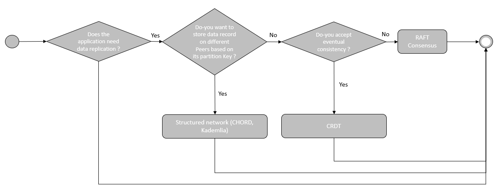

P2P Network
The following chapters are talking about the different types of P2P Network.
Each of them are evaluated based on the CAP theorem.
- Consistency :
- Unstructured Network : Every Peers of the Network has at any moment a (partial) replica of the same state of the data structure.
- Structured Network : A data record is stored in one Peer based on its partition key.
- Availability : Access to this data is always possible in a very short delay.
- Partition tolerance :
- Unstructured Network : Data structure should be resilient to communication channel failures that leads to temporary partition between Peers.
- Structured Network : The way partitions are formed is described by the algorithm.
| P2P Network | Type | Consistency | Availability | Partition tolerance |
|---|---|---|---|---|
| CRDT | Unstructured | Eventual Consistency | Good | Temporary partition between Peers |
| Raft consensus | Unstructured | Strong Consistency | Good | Strong partition tolerance |
| Chord | Structured | Strong consistency | Good | Strong partition tolerance |
| Kademlia | Structured | Strong consistency | Good | Strong partition tolerance |
Depending on the nature of the software, a P2P network could be chosen.
